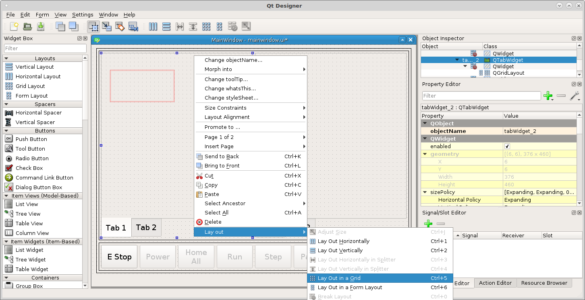
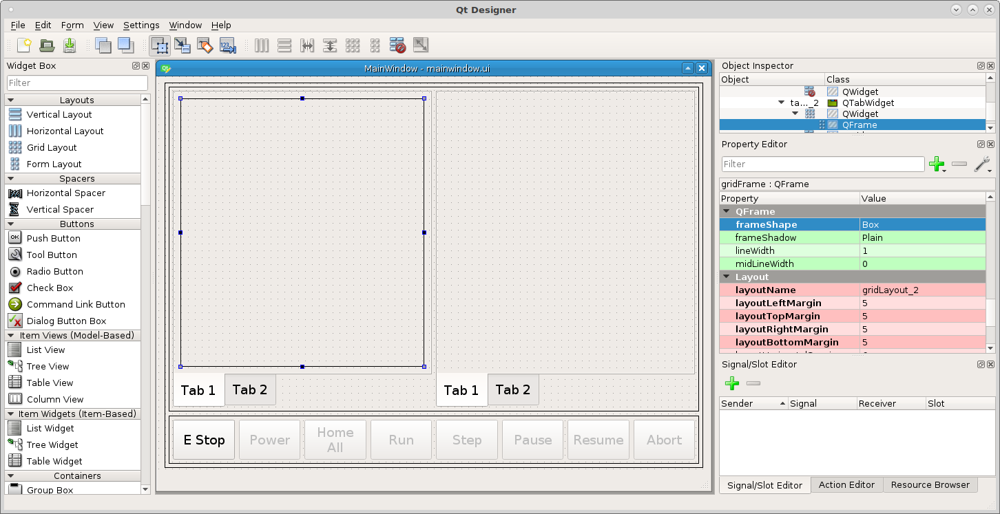
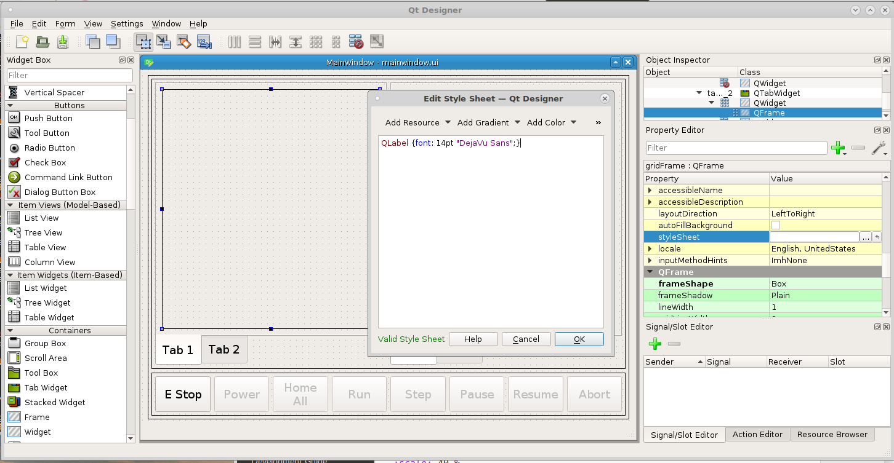
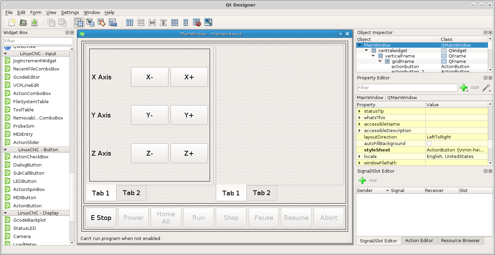
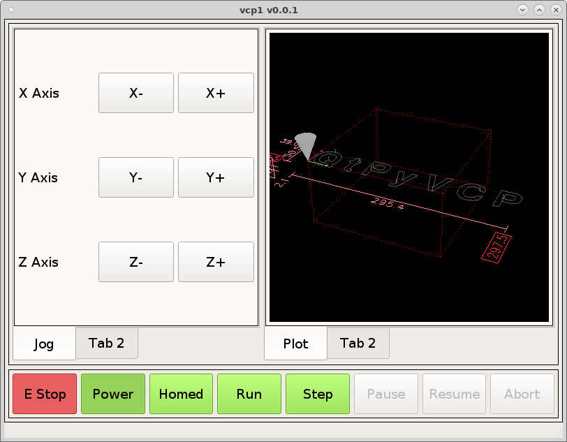
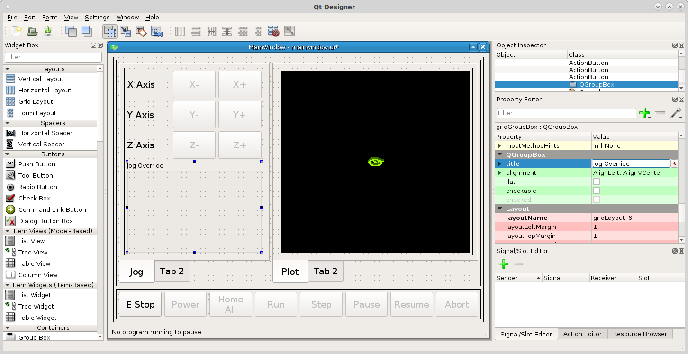
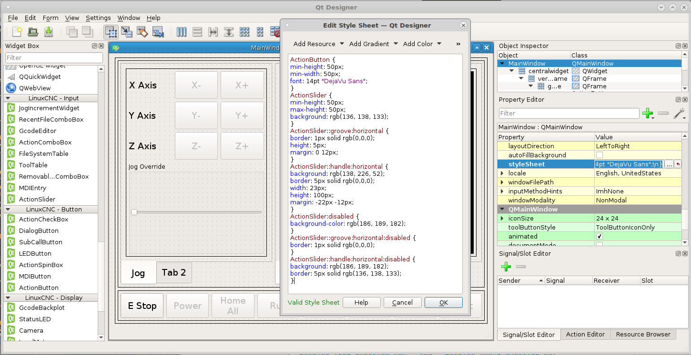
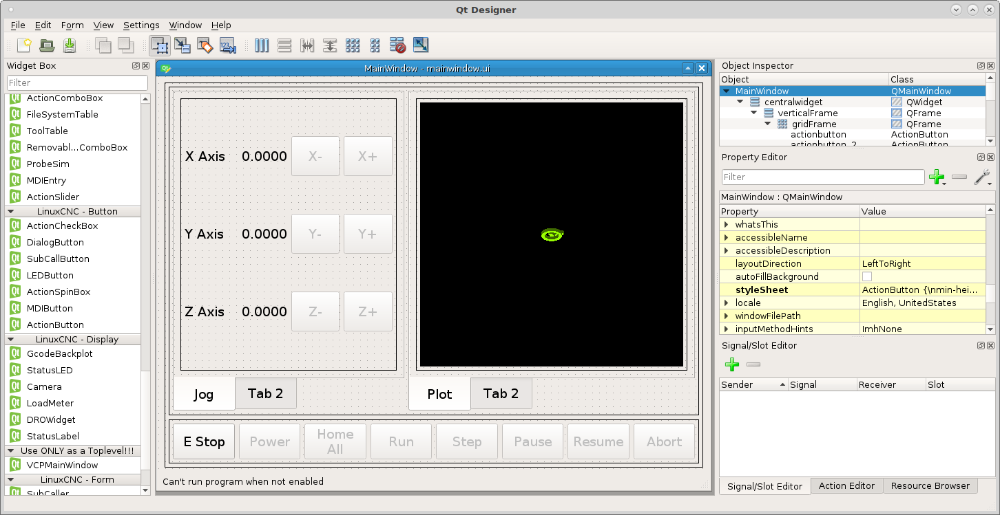
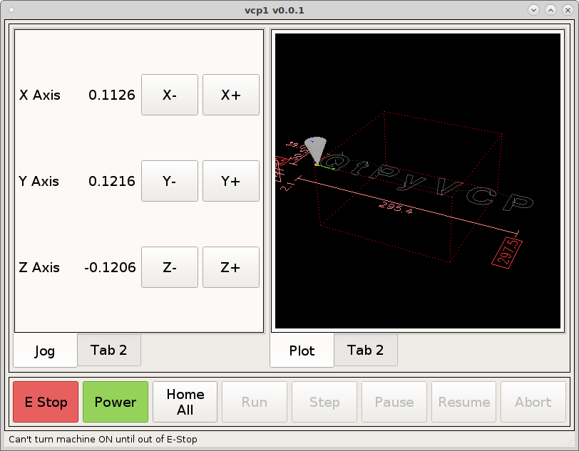

Jog and DRO¶
In our left Tab Widget Tab 1 lets add some jog controls, drag a grid layout into the tab then right click in the tab (not the grid layout) and select layout in a grid. This will cause the grid layout to fill the tab.
{kind=link}
Make the same changes to the frame as before morph into QFrame, box frame, margins 5.
{kind=link}
In the QFrame of Tab 1 we want the QLabels text to be 14pt font so open the stylesheet for the grid layout and add the following
QLabel {font: 14pt "DejaVu Sans";}
Notice how we set the QLabel font inside the frame, if we wanted to set all QLabels we could set this in the QMaineWindow.
{kind=link}
Now lets drag some actionButtons into the left panel for jogging controls and some standard labels from the Display Widgets for each axis and change the text to match the following.
{kind=link}
Add the following actionNames to the jog buttons.
machine.jog.axis:x,neg
machine.jog.axis:x,pos
machine.jog.axis:y,neg
machine.jog.axis:y,pos
machine.jog.axis:z,neg
machine.jog.axis:z,pos
Notice how the buttons become disabled as you add the actionNames. The action is controlling the button enable.
In the right hand QTabWidget do as above and drag a grid into Tab 1 and set the layout to grid and change to a box frame and the margins to 5. Now drag a GcodeBackplot into the frame so you can see it move when you jog.
To change the tab name select the tab widget and change the current tab name.
{kind=link}
Note
At this time the jog slider is being worked on so skip this section for now.
Drag a grid layout below the jog buttons in the tab. Drag the edge until it fills the tab left to right and morph it into a QGroupBox and set the title to Jog Override.
{kind=link}
Now we need to make a jog speed slider, drag an ActionSlider into the group box and change orientation to horizontal.
Now put machine.jog.set-linear-speed in the ActionSlider actionName.
Now add the following to the QMainWindow stylesheet because we want all the Action Sliders to have the same style.
ActionSlider {
min-height: 50px;
max-height: 50px;
background: rgb(136, 138, 133);
}
ActionSlider::groove:horizontal {
border: 1px solid rgb(0,0,0);
height: 5px;
margin: 0 12px;
}
ActionSlider::handle:horizontal {
background: rgb(138, 226, 52);
border: 5px solid rgb(0,0,0);
width: 23px;
height: 100px;
margin: -22px -12px;
}
ActionSlider:disabled {
background-color: rgb(186, 189, 182);
}
ActionSlider::groove:horizontal:disabled {
border: 1px solid rgb(0,0,0);
}
ActionSlider::handle:horizontal:disabled {
background: rgb(186, 189, 182);
border: 5px solid rgb(136, 138, 133);
}
The first three handle the size, border and enabled colors and the last three handle the disabled colors.
{kind=link}
Now we can see the slider in action.
Note
At this time the jog slider is not complete so it does not go disabled.
{kind=link}
DRO
Add a DROWidget between the jog buttons and the axis labels and set the axis and the reference_type to Relative and select the correct axis for each one.
{kind=link}
Now when we run the VCP we can see the DRO’s change when we jog an axis.
{kind=link}
You can also use a StatusLabel to display position. Create a rule for the
StatusLabel and add a channel from the position plugin and the expression is
ch[0]. The following example is for relative position and the X axis.
position:rel?string&axis=x
See the Machine Positions page for more information on setting position display options.